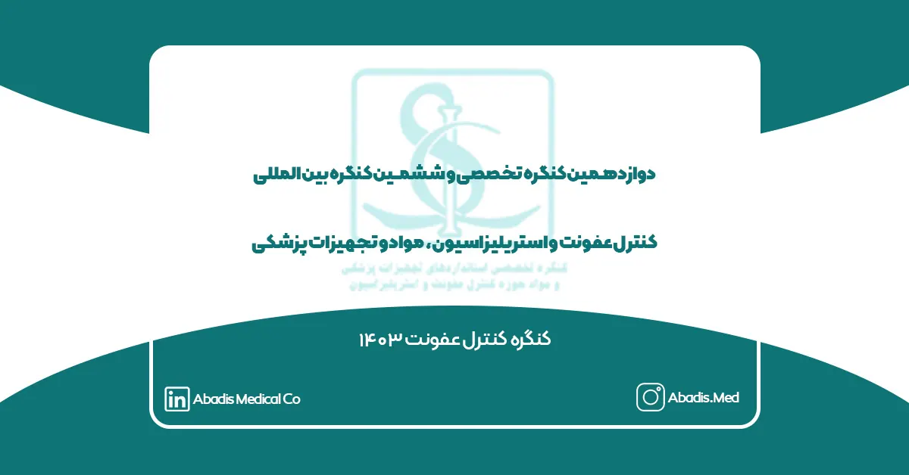
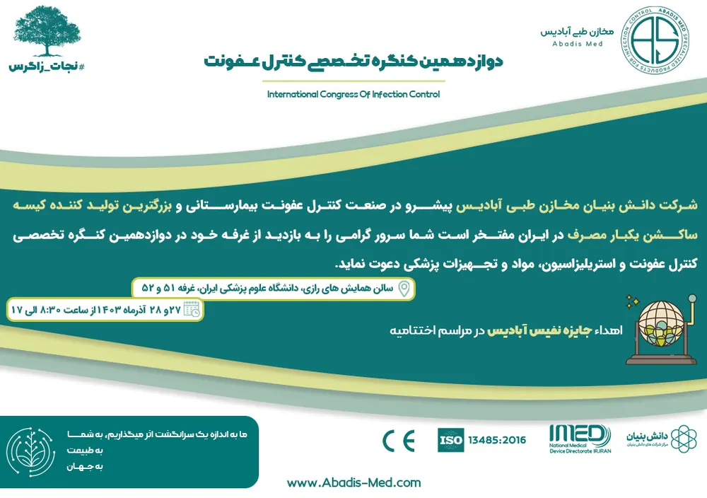

شرکت دانش بنیان مخازن طبی آبادیس پیشرو در صنعت کنترل عفونت بیمارستانی و بزرگترین تولید کننده کیسه ساکشن یکبار مصرف در ایران مفتخر است شما سرور گرامی را به بازدید از غرفه خود در دوازدهمین کنگره تخصصی کنترل عفونت و استریلیزاسیون مواد و تجهیزات پزشکی دعوت نماید.
زمان برگزاری: ۲۷ و ۲۸ آذر ماه ۱۴۰۳ از ساعت ۸:۳۰ الی ۱۷
مکان برگزاری: دانشگاه علوم پزشکی ایران، سالن همایش های رازی، غرفه ۵۱ و ۵۲
دوازدهمین کنگره تخصصی و ششمین کنگره بین المللی کنترل عفونت و استریلیزاسیون مواد و تجهیزات پزشکی در تاریخ 27 و 28 آذرماه 1403 در سالن همایش های بین المللی رازی دانشگاه علوم پزشکی ایران با حمایت دانشگاه علوم پزشکی شهید بهشتی، مجمع خیرین سلامت کشور، و با همکاری معاونت های بهداشت و درمان و توسعه وزارت بهداشت، درمان و آموزش پزشکی، سازمان غذا و دارو، سازمان جهانی بهداشت، مرکز تحقیقات بیماریهای عفونی و گرمسیری، مرکز مدیریت بیمارستانی و تعالی خدمات بالینی، انجمن کنترل عفونت، مرکز سلامت محیط و کار، مرکز مدیریت بیماریهای واگیر، مرکز نظارت و اعبتار بخشی امور درمان، دفتر توسعه منابع فیزیکی و امور عمرانی وزارت بهداشت، دفتر ارزیابی فناوری تدوین استاندارد و تعرفه سلامت، دانشگاه علوم پزشکی ایران، دانشگاه علوم پزشکی تهران، اداره کل استاندارد استان تهران، سازمان تامین اجتماعی، سازمان حفاظت محیط زیست، شهرداری تهران، پژوهشگاه استاندارد، سازمان جهانی استریل، سازمان پژوهش های علمی و صنعتی ایران و آزمایشگاه مرجع سلامت برگزار میگردد.
اهداف کنگره:
- کاهش عفونتهای ناشی از مراقبت و خدمات سلامت.
- ارتقاء سطح سلامت جامعه با ارایه جدیدترین دستاوردهای پژوهشی و علمی.
- یکپارچه سازی و هماهنگی دستگاهها ونهادهای فعال درحوزه پیشگیری و کنترل عفونت.
شعار کنگره کنترل عفونت 1403:
عزم ملی جهت شکل گیری نظام یکپارچه پیشگیری وکنترل عفونت در راستای چشم انداز 1404.
برای اطلاع از برنامههای دوازدهمین کنگره کنترل عفونت اینجا را کلیک کنید.
شرکت دانش بنیان مخازن طبی آبادیس در سال ۱۴۰۳ علاوه بر حضور در دوازدهمین کنگره تخصصی و ششمین کنگره بین المللی کنترل عفونت و استریلیزاسیون مواد و تجهیزات پزشکی، قصد دارد به دلیل به نوآوری و کیفیت برگزاری بیشتر در اولین دوره از نمایشگاه بین المللی ایران کلین 2025 و همچنین اولین کنگره جامع پیشگیری از عفونت های بیمارستانی و ارتقا کیفیت خدمات بهداشتی و استریلیزاسیون شرکت نماید. این کنگره در تاریخ 26 الی 28 دی ماه 1403 در هتل المپیک تهران برگزار می گردد.

شرکت مخازن طبی آبادیس در سال گذشته، در یازدهمین کنگره کنترل عفونت حضور داشت. برای مشاهده گزارش یازدهمین کنگره کنترل عفونت کلیک کنید.
در دوازدهمین کنگره تخصصی کنترل عفونت نیز منتظرتان هستیم …